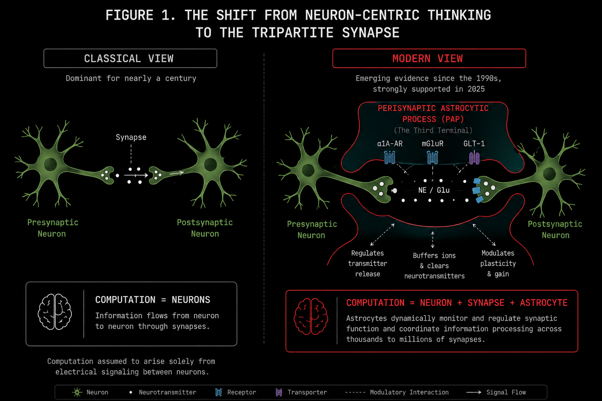
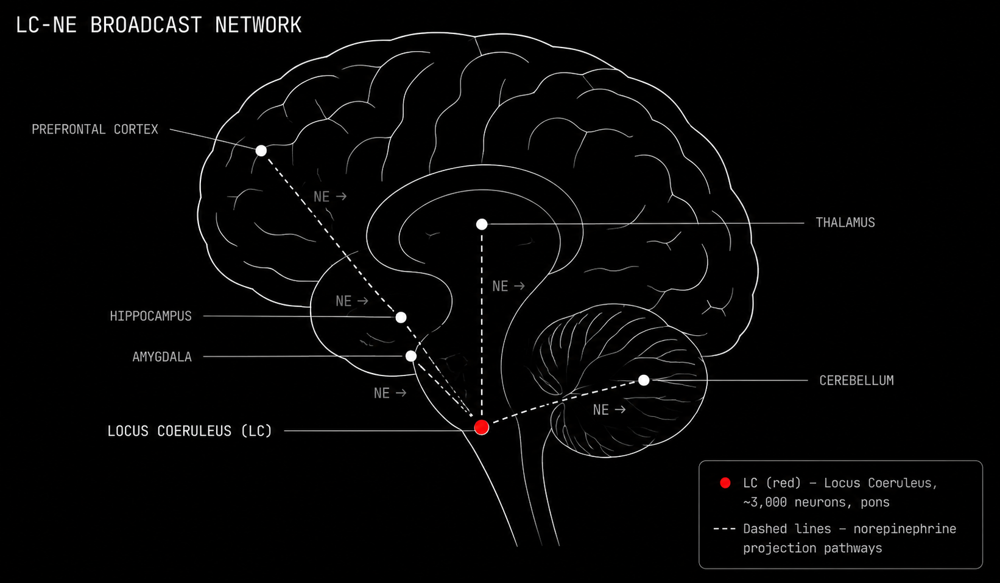
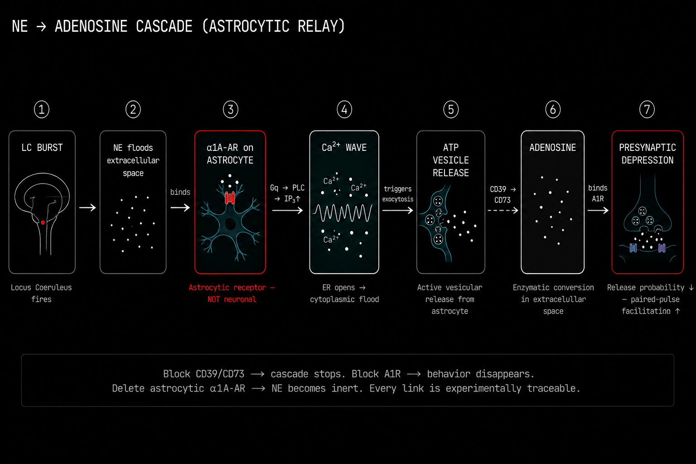

I want to start with something uncomfortable. For over a century, every major model of intelligence, from Ramón y Cajal's neuron doctrine in the 1890s to the Transformer architecture powering every LLM you have used, has operated on a single foundational assumption.
The neuron is the unit. The synapse is the mechanism. The weighted graph is the computation.
This was never an empirical conclusion. It was a methodological artifact.
Neurons are large, electrically active, and they respond beautifully to the recording and staining techniques neuroscience has historically preferred. Astrocytes are slow. They use calcium instead of electrical potential as their primary signal. They were effectively invisible to electrophysiology for most of the twentieth century. So we built an entire science, and then an entire engineering discipline, around the cells we could measure.
In May 2025, three independent research groups published simultaneously in Science.[1, 2, 3] Three different species. Three completely different experimental paradigms. One conclusion.
Norepinephrine does not reconfigure brain circuits by acting on neurons. It acts on astrocytes. And astrocytes are the ones that do the reconfiguring.
This is not a footnote. This is a structural revision of how the brain computes. And if you are building AI systems that claim any relationship to cognition, it matters to you whether or not you are willing to admit it yet.
The Neuron Doctrine and the Century of Incomplete Maps
Cajal formalized the neuron doctrine from his Golgi-stained preparations in the 1890s. His logic was internally consistent and beautiful. Neurons are discrete, individuated cells. They communicate through synaptic junctions. The pattern of connections is the basis of thought. This gave us Hebbian learning, integrate and fire networks, attractor dynamics, predictive coding, and eventually deep neural networks and the Transformer.
Everything neuron. Everything synapse.
There is a direct line from Cajal's microscope slides to the GPT architecture. The computational theory of mind, which holds that mental states are computational operations over symbolic structures, was built on the assumption that if you understand the connections, you understand the computation. Scale the graph. Train it on enough data. You get intelligence.
What that picture has always left out is a cell type that outnumbers neurons in many brain regions, wraps around hundreds of thousands of synapses simultaneously, and responds to the brain's arousal signals before any neuron does.
The astrocyte.
"We live in the age of connectomics, where everyone loves to say if you understand the connections between neurons, we can understand how the brain works. That's not true. You can get dramatic changes in firing patterns of neurons with zero changes in neuronal connectivity." — Marc Freeman, Director, Vollum Institute[10]
Freeman is not making a philosophical provocation. He is describing a specific, reproducible empirical finding with a specific mechanistic explanation. The third terminal of the synapse, the perisynaptic astrocytic process, controls the gain of the entire connection between the other two. It does not leave any trace in the connectome.
The connectome is not the computation.
The graph is not the algorithm.
The Third Terminal Nobody Modeled
A classical synapse has two parties. The presynaptic terminal holds vesicles of neurotransmitter. The postsynaptic density holds the receptors. Signal travels in one direction.
This is the bipartite model. This is what every neural network in existence is based on.
The astrocyte process was anatomically described in the 1990s and computationally ignored for the next thirty years. It wraps around the synaptic cleft like a sleeve. It expresses glutamate transporters to mop up transmitter spillover before it causes excitotoxicity. And critically, it expresses its own receptors. Metabotropic glutamate receptors. Alpha-1 adrenergic receptors. Cannabinoid receptors.
This makes it a full input and output device in its own right, sensing the state of the synapse and responding with chemical signals of its own, called gliotransmitters, that feed back to modulate presynaptic release probability.

One astrocyte can envelop anywhere between 20,000 and two million synapses simultaneously. In humans, that upper number is not an exaggeration. Human protoplasmic astrocytes are 15 to 16 times larger by somatic volume than their rodent counterparts, propagate calcium waves five times faster, and have ten times more primary arborization.
The entire field underestimated this for decades because virtually all the cellular neuroscience was done in mice.
The perisynaptic astrocytic process is not a bystander.
It is the third terminal.
The Locus Coeruleus: The Brain's Arousal Broadcaster
The locus coeruleus is a cluster of roughly three thousand neurons sitting in the pons of the brainstem. It is the most densely noradrenergic nucleus in the entire brain. Despite its tiny size, it sends norepinephrine to virtually everywhere: the prefrontal cortex, the hippocampus, the amygdala, the thalamus, the spinal cord, the cerebellum.

The locus coeruleus does not send targeted messages. It broadcasts.
When something salient happens, a sudden sound, an unfamiliar environment, a threat, a moment of intense effort, the locus coeruleus fires a burst of norepinephrine across the entire brain simultaneously. This is the brain's arousal signal. Its attention switch. Its fight or flight initiator. The locus coeruleus is one of the most pharmacologically targeted structures in all of psychiatry. Every ADHD medication, every SNRI antidepressant, every adrenergic drug for PTSD nightmares targets this axis.
All of that pharmacology was designed under the assumption that norepinephrine talks directly to neurons.
The three Science papers from May 2025 say otherwise, clearly and across three species.[1, 2, 3]
In the Papouin Laboratory at WashU Medicine, Thomas Lefton and colleagues performed a surgically clean experiment in mouse hippocampal CA1.[1] First, they selectively removed norepinephrine receptors from neurons only, leaving astrocytic receptors intact. Norepinephrine had zero effect on synaptic strength. Then they repeated the experiment in reverse: removing norepinephrine receptors from astrocytes only, leaving neuronal receptors completely intact.
Every norepinephrine driven synaptic change disappeared entirely.
"We did not expect all of it to be." — Thomas Papouin, on discovering that 100% of norepinephrine's synapse-level effect routes through astrocytes.[1]
Not most of it. Not the majority. All of it.
The Cascade: From Norepinephrine to Adenosine
This is the mechanism. Walk through each link carefully because this chain is the most important single finding for understanding how brain state is controlled, and therefore for understanding what AI architectures are not doing.

The locus coeruleus fires a burst. Norepinephrine floods the extracellular space around the synapse.
Norepinephrine binds to alpha-1A adrenergic receptors on the astrocyte membrane. Not the neuronal alpha-2 receptors most of the prior literature had been focused on. The astrocytic alpha-1A adrenergic receptors are Gq protein coupled receptors.
IP3 is produced. It binds to IP3 receptors on the endoplasmic reticulum membrane inside the astrocyte. The ER opens and floods calcium into the cytoplasm. Not a subtle event. A global intracellular calcium wave that can travel across the entire astrocytic syncytium through gap junction channels at speeds of 5 to 20 micrometers per second.
The calcium elevation triggers exocytosis. ATP vesicles inside the astrocyte fuse with the plasma membrane and release ATP into the extracellular space. This is active, calcium triggered, vesicular release. The astrocyte has its own release machinery.
Extracellular ATP encounters two ectonucleotidase enzymes sitting on the cell surface. CD39 hydrolyzes ATP to ADP and then to AMP. CD73 then cleaves AMP to produce adenosine. This two step enzymatic relay happens in seconds, in the narrow space between cells.
Adenosine binds to inhibitory A1 adenosine receptors on the presynaptic neuronal terminal. A1 receptor activation suppresses voltage-gated calcium channels at the active zone, reducing neurotransmitter release probability.
The synapse depresses.
Not because anything happened to the postsynaptic neuron. Not because any synaptic weight changed. Because the astrocyte sensed norepinephrine, produced IP3, released calcium, vesicle-fused ATP, converted it enzymatically to adenosine, and suppressed the presynaptic terminal through a receptor.
The electrophysiological signature is specific and beautiful. You see a large increase in paired-pulse facilitation, the classic marker of presynaptic modulation. You see a marked increase in presynaptic transmission failures. Postsynaptic potency, the amplitude of successful, non-failed transmission events, remains completely unchanged.
This is purely presynaptic gain suppression through an astrocytic relay.
If you pharmacologically block CD39 or CD73 to prevent adenosine synthesis, the cascade stops dead. If you block A1 receptors, the behavioral consequences vanish. If you delete astrocytic alpha-1A receptors, norepinephrine becomes biologically inert even with all neuronal receptors fully intact.
You can trace every single link in this chain experimentally.[1]
Behavioral Consequences: What Happens When Astrocytes Gate the State
The zebrafish data from the Ahrens Laboratory at Janelia Research Campus made the behavioral stakes completely explicit.
Chen and colleagues studied futility-induced passivity, the zebrafish analog of learned helplessness.[2] An animal swims against a current it cannot overcome. At some point it stops trying. It enters a passive state.
The transition from active coping to passive resignation is entirely astrocyte-gated.
Block astrocytic calcium signaling. The animal cannot stop trying. It keeps swimming against a futile current indefinitely because it has no mechanism to register that resistance has become pointless. The behavior is not suppressed. The state switch fails to execute.
The Freeman Laboratory's Drosophila data added a conceptually different layer.[3] In fruit flies, the norepinephrine analog octopamine does not add new receptor pathways to astrocytes. It functionally unlocks receptor pathways that already exist but are silent. The astrocyte switches from deaf to fully receptive to all incoming neurotransmitters.
This is a state gated input filter at the glial level.
The brain does not just increase its overall sensitivity under arousal. It restructures which channels it is listening to at all.
Think about what this means for everything we have attributed to neuronal mechanisms. Every norepinephrine mediated mood transition. Every attentional shift. Every fear memory consolidation. Every episode of learned helplessness. These are astrocyte-gated state transitions. The locus coeruleus fires. The astrocyte hears it. The astrocyte executes the circuit-level change. The neuron experiences the consequence.
Prazosin blocks alpha-1 adrenergic receptors. Clinical trials show it reduces PTSD nightmares. The receptor it is blocking is the astrocytic alpha-1A receptor. The mechanism was always pharmacologically correct. The cell type attribution was wrong.
Two Circuits, One Supervisor: TRN and Amygdala
The same astrocytic gain control mechanism plays out differently in two specific subcortical circuits, revealing the full range of behavioral functions this architecture actually implements.
The Thalamic Reticular Nucleus and the Attentional Gate
The TRN is a thin shell of GABAergic neurons wrapping the thalamus. It sits at the intersection of ascending sensory relay fibers and descending cortical projections. Every sensory signal traveling from the body to the cortex passes through thalamic relay nuclei that are under direct TRN inhibitory control.
The TRN is the gatekeeper of what reaches consciousness. Attentional selection, the ability to amplify one sensory channel while suppressing all others, is implemented here. And astrocytes in the TRN control this gate through two mechanisms.
First, they release endozepines, peptides derived from Diazepam Binding Inhibitor protein. These act as endogenous positive allosteric modulators at alpha-3 subunit GABA-A receptors concentrated on TRN neurons, increasing the inhibitory charge of spontaneous IPSCs within the TRN itself. This prevents pathological hypersynchrony. An unbraked TRN produces absence seizures.
The astrocyte is the brake.
Knocking out the DBI gene or poisoning TRN astrocytes with fluorocitrate eliminates this inhibitory charge and leaves the thalamocortical network highly susceptible to seizures and sleep fragmentation.
Second, when cortical attention is directed at a specific sensory modality, descending corticothalamic fibers fire. Glutamate spills over onto astrocytic mGlu2 receptors in the ventrobasal thalamic relay nuclei. Astrocytic calcium rises. This suppresses the GABAergic TRN-to-VB projection, a disinhibition of the attended sensory relay. The attended signal passes through at elevated gain. Competing signals do not.
Pharmacologically blocking astrocytic metabolism in the TRN-VB complex with fluorocitrate locks the gate closed. You cannot focus on anything.
The Amygdala and the Anxiety Encoder
The basolateral amygdala and central amygdala ask a different question. Not which signals to amplify, but which emotional state to sustain.
Using high resolution calcium imaging in freely moving mice, researchers found that BLA astrocytic calcium elevations track apprehensive behavior with 82% predictive accuracy.[8] A decoder trained on BLA neuronal calcium activity under the same conditions performs little better than random chance on the same behavioral prediction task.
The persistent representation of anxiety is encoded in the astrocytic network, not in the local neuronal population.
Astrocytes track the sustained emotional tone over timescales of seconds to minutes. Neurons track the transient execution of behavioral transitions. These are different timescales encoding different levels of the same behavioral state.
In the central amygdala's medial subdivision, astrocytes perform an elegant dual gating operation during fear extinction. When CeM astrocytes are activated via endocannabinoid CB1 signaling, they release adenosine that simultaneously suppresses glutamatergic BLA-to-CeM excitation via A1 receptors and facilitates GABAergic CeL-to-CeM inhibition via A2A receptors on the relevant presynaptic terminals.
Suppress the excitatory drive. Amplify the inhibitory drive. The CeM output neurons reduce firing. Freezing behavior stops.
The astrocyte is the molecular mechanism of safety learning.
Divergent Thinking and β(t): The Biological Noise Schedule
Now I want to make a connection that most people in AI and computational neuroscience have not fully formalized yet. And it is the connection that matters most for understanding what divergent thinking actually is at a mechanistic level.
Ambrogioni (Entropy 2024) established a formal equivalence between diffusion-based generative models and Modern Hopfield Networks.[6] When a diffusion model is trained on a finite set of discrete patterns, its learned score function is asymptotically identical to the energy gradient of an MHN:
These converge when the diffusion noise schedule β(t) matches the inverse temperature in the Hopfield energy function. This means generation in a diffusion model is mathematically equivalent to attractor-based memory retrieval in a Hopfield network. Training is encoding memories as energy minima. Generating is retrieving them from noisy initial conditions.
Now consider what happens when you vary β.
High β means blurry attractors. The energy landscape is shallow. The retrieval dynamics are diffuse. The system samples broadly across the energy manifold rather than converging on a specific stored pattern.
High β is generalization mode. Semantic memory. Novel associations. Divergent thinking.
Low β means sharp attractors. The energy landscape is steep. The retrieval dynamics converge rapidly on a specific energy minimum.
Low β is memorization mode. Episodic recall. Specific, retrievable events.
In a diffusion model trained in a lab, β(t) is a fixed hyperparameter set before training. In the brain, β(t) is a physiological variable. And the locus coeruleus norepinephrine astrocyte axis is the mechanism that sets it in real time.
High locus coeruleus firing means high norepinephrine. Strong alpha-1A receptor activation produces a large calcium elevation. Maximum ATP and adenosine output follows. Maximum presynaptic gain suppression and maximum broadening of astrocytic input receptivity.
This is β going up.
Attractors blur. The system enters generalization mode. Pattern recognition becomes less specific. Richer, broader associative connections form across pattern space.
Emotionally arousing environments produce richer associative connections. This is not a psychological observation. It is the phenomenological surface of a biological diffusion noise schedule being pushed upward by noradrenergic activity through an astrocytic relay. Divergent thinking, novel ideation, the ability to span categorical boundaries: these are what happen when locus coeruleus tone raises β(t) through astrocytic calcium dynamics into an intermediate range.
The reverse is equally important. Under low locus coeruleus tone, at rest, and especially during NREM sleep when the locus coeruleus goes nearly completely silent, β(t) approaches zero. Attractors sharpen. Specific episodic memories become highly accessible. Pattern representations narrow and consolidate.
The locus coeruleus going silent during NREM sleep is not a side effect of sleep. It is the mechanism of memory consolidation.[7]
Kozachkov, Slotine and Krotov formalized the hardware implementation of this in PNAS 2025.[4] Neuron astrocyte networks implement Dense Associative Memory with supralinear memory scaling. The astrocytic calcium flux coefficients are the actual storage parameters of the energy function. The formal chain is now complete.
Diffusion Models ≡ Modern Hopfield Networks (Ambrogioni 2024) ≡ Dense Associative Memory ≡ Neuron-Astrocyte Associative Memory (Kozachkov PNAS 2025).
With biological hardware. With the locus coeruleus controlling the noise schedule dynamically in response to the environment.
The same calcium purinergic relay, identified by Lefton et al. 2025,[1] is simultaneously a Dense Associative Memory retrieval gate, a precision matrix updater in active inference terms,[9] and a diffusion noise schedule controller. These are not separate functions attributed to separate mechanisms. They are three mathematical descriptions of one biological event.
What This Architecture Is Missing in AI
LLMs process tokens. This is not a criticism. It is a description. They implement a conditional probability distribution over token sequences and they do it extraordinarily well.
But the architecture has no third terminal.
No alpha-1A receptor. No calcium wave. No adenosine relay. No astrocytic gain control. No β(t) that responds to environmental novelty. No mechanism to register futility and enter a passive state. No architecture for sustained emotional tone. No distinction between episodic sharp retrieval and semantic generalized abstraction that is implemented in the same physical medium at different noise levels. No slow layer that reparameterizes the fast layer continuously based on accumulated evidence over time.
The Turing test measured anthropomorphic projection, not computational equivalence. The confusion between producing human-like outputs and implementing human-like computation has become the foundational error of the contemporary AI discourse. A system that produces sentences indistinguishable from human sentences is not thereby thinking. It is producing sentences indistinguishable from human sentences.
The gap is the entire architecture described in this post.
"Ninety-nine percent of people doing experiments on circuits don't even think about what the astrocyte might be doing." — Marc Freeman, Vollum Institute[10]
Freeman said this about neuroscientists. It applies equally, perhaps more acutely, to AI researchers.
The three Science papers from May 2025 make this impossible to dismiss as biological detail irrelevant to engineering. These papers establish that the mechanism responsible for attention, arousal, mood, learned helplessness, fear, memory consolidation, and attentional selection is not neuronal. It is astrocytic. Every model of intelligence that omits the tripartite synapse is modeling a brain without its primary gain control and state switching layer.
Where I Think This Goes
The tripartite synapse is the computational unit. Not the bipartite one. Any architecture that is serious about modeling the processes we loosely call thinking needs to implement the third terminal: the slow, calcium mediated, gain controlling, state switching layer that sits above the fast neuronal computation and continuously reparameterizes it.
This is not beyond engineering. The NAAM formal model gives you the mathematical structure. Ambrogioni gives you the diffusion equivalence.[6] The precision-weighted active inference framework gives you the update rules for the precision matrices.[9] The PNAS 2025 Kozachkov paper gives you the supralinear memory scaling from astrocyte-neuron contact topology.[4]
What remains is coupling a fast token level or state level computation to a slow astrocyte level parameterization that responds to context, accumulates evidence over seconds to hours, and controls the effective noise schedule of memory retrieval in a way that is sensitive to environmental uncertainty and novelty.
That is the architecture. That is what the biology has been converging on, one experiment at a time, for the last decade. The 2025 Science papers just made the intermediate step, that the norepinephrine pathway routes through astrocytes, empirically bulletproof across three species and 600 million years of evolutionary divergence.
I have been building toward this with DAHN at Ananta Research. The formalism is in the notebooks. The connections to diffusion-based memory and precision-weighted inference are becoming precise enough to write down as systems architecture rather than conceptual sketches. And the neuroscience is, for the first time, giving us the mechanistic substrate to do this with biological grounding rather than analogy.
References
[1] Lefton, K. B., Wu, Y., Dai, Y., Okuda, T., et al. (2025). Norepinephrine signals through astrocytes to modulate synapses. Science, 388(6748), 776–783.
[2] Chen, A. B., Duque, M., et al. (2025). Norepinephrine changes behavioral state via astroglial purinergic signaling. Science, 388(6748), 769.
[3] Freeman, M. R., Guttenplan, K. A., et al. (2025). Norepinephrine enables astrocyte responsiveness to neuromodulators. Science, 388(6748).
[4] Kozachkov, L., Slotine, J.-J., & Krotov, D. (2025). Neuron-astrocyte associative memory. PNAS, 122(21), e2417788122.
[5] Kozachkov, L., Kastanenka, K. V., & Krotov, D. (2023). Building transformers from neurons and astrocytes. PNAS, 120, e2219150120.
[6] Ambrogioni, L. (2024). In search of dispersed memories: Generative diffusion models are associative memory networks. Entropy, 26(5), 381.
[7] Rupprecht, P., et al. (2024). Centripetal integration of past events in hippocampal astrocytes regulated by locus coeruleus. Nature Neuroscience, 27, 1–13.
[8] Williamson, M. R., et al. (2025). Learning-associated astrocyte ensembles regulate memory recall. Nature, 637(8045), 478–486.
[9] Friston, K. J. (2010). The free-energy principle: A unified brain theory? Nature Reviews Neuroscience, 11(2), 127–138.
[10] Wickelgren, I. (2026, January 30). Once thought to support neurons, astrocytes turn out to be in charge. Quanta Magazine.